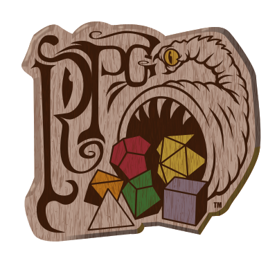

🗺️🐉
The Cartographer
"The world remembers where stories began."
World Canvas
Generate World
New Seed
Export
World Settings
Seed
World Size
Small
Medium
Large
Continent
Terrain Style
Balanced
Mountainous
Forested
Archipelago
Arid
Frozen
Climate
Temperate
Tropical
Cold
Mixed
Map Display
Terrain
Square Grid
Hex Grid
Terrain + Grid
Terrain + Hex
Civilization
Untamed
Frontier
Settled
Kingdoms
World Information
Awaiting generation...
The Cartographer's Journal
No lands have yet been charted.